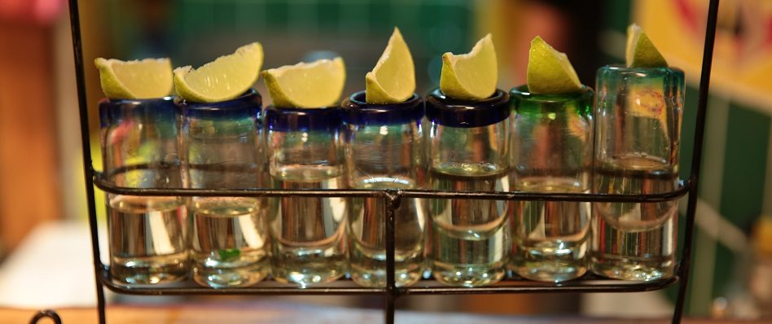
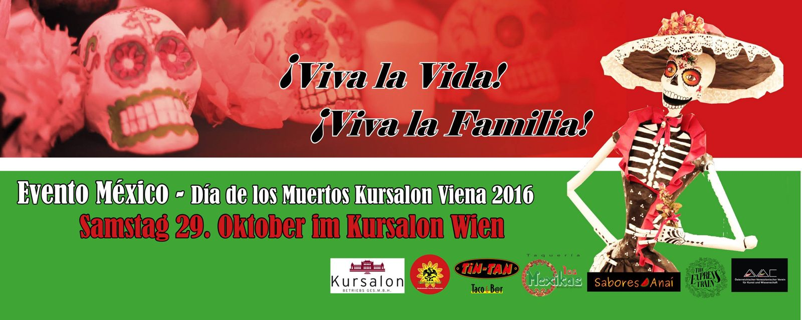

Galerie & Events
Bilder aus beiden Häusern, ein Rückblick auf unser Día-de-los-Muertos-Fest im Kursalon Wien — und ein Ausblick auf die Produkte, die wir vorbereiten.
Aus der Küche und vom Tisch
Klicken Sie ein Bild an, um es in voller Größe zu öffnen.






Día de los Muertos im Kursalon Wien
Samstag, 29. Oktober 2016: MEXIKAYOTL, TIN TAN und LOS MEXIKAS luden zum mexikanischen Totenfest in den Kursalon Wien. Voller Freude über den großen Erfolg und die riesige Resonanz des Vorjahres war es die zweite Auflage des Events „El día de los muertos“. Das Motto: Es lebe die Familie!
Programm „La Familia“ · 14:00 – 18:00
- Kinderbetreuung und -animation
- Kleinkunstmarkt
- Gastronomie: Pan de muertos, Torten, Süßigkeiten, Speisen, Getränke
- Piñatas und vieles mehr
Abendprogramm · 19:30 – 04:00
- Opfergabe
- Schminkstation „LA FAMILIA“
- Modeschau
- Aztekentanz
- Prozession zum Altar
- La Llorona
- Mariachis
- Folkloretanzgruppe
- Salsa-Show
Live on stage
PSICOTROPICOS (Cumbia-Folklore-Pop) · EXPRESS TRAIN (Latino-Pop) · DJ LEO
Kommende Veranstaltungen
Auf der bestehenden Website steht unter „Kommende Veranstaltungen“ seit Jahren nichts — die Überschrift bleibt leer. In der neuen Struktur gibt es dafür eine Terminliste, die das Haus selbst pflegt, und eine Erinnerung per E-Mail.
Wir tragen hier bewusst keine erfundenen Termine ein. Sobald das nächste Fest steht, erscheint es an dieser Stelle — und alle Angemeldeten erfahren es zuerst.
Produkte — „Demnächst …“
Die Produktseite der bestehenden Website kündigt seit Langem ein Sortiment an, ohne es zu zeigen. So könnte die Seite aussehen, sobald es so weit ist: mit Bild, Beschreibung, Preis und Abholung im Lokal.
Was hier stehen wird
- Produktname und kurze Beschreibung
- Preis und Packungsgröße
- Verfügbarkeit je Standort (1080 / 1020)
- Abholung im Lokal oder Versand
Solange das Sortiment nicht feststeht, bleibt diese Fläche leer statt mit erfundenen Artikeln gefüllt — genau das unterscheidet eine gepflegte Seite von einer vergessenen.
Mesa lista — Tisch reservieren
Taquería 1080: +43 1 406 08 71 · Antojitos 1020: +43 1 212 25 61